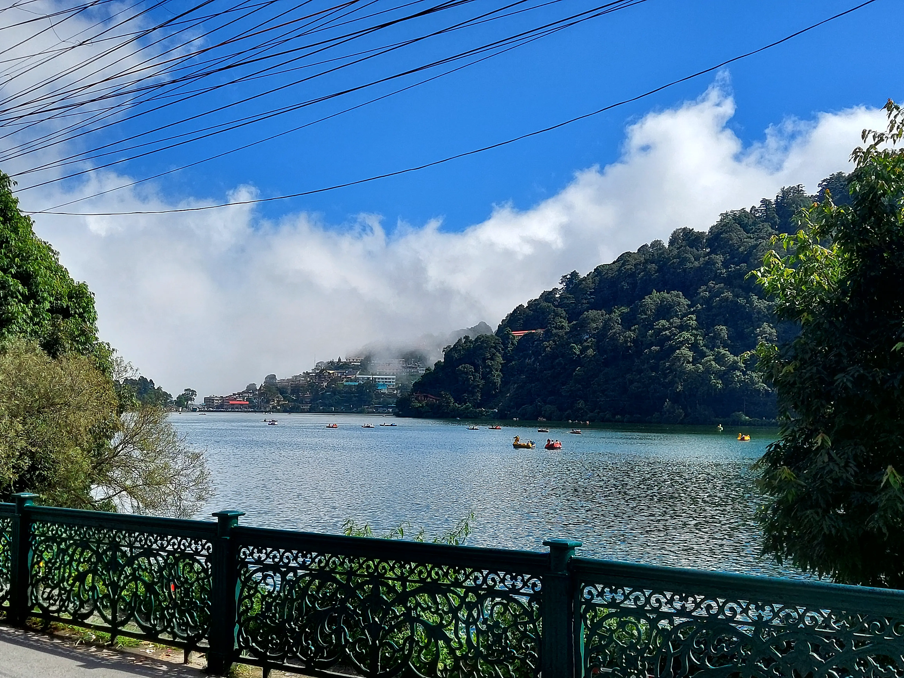
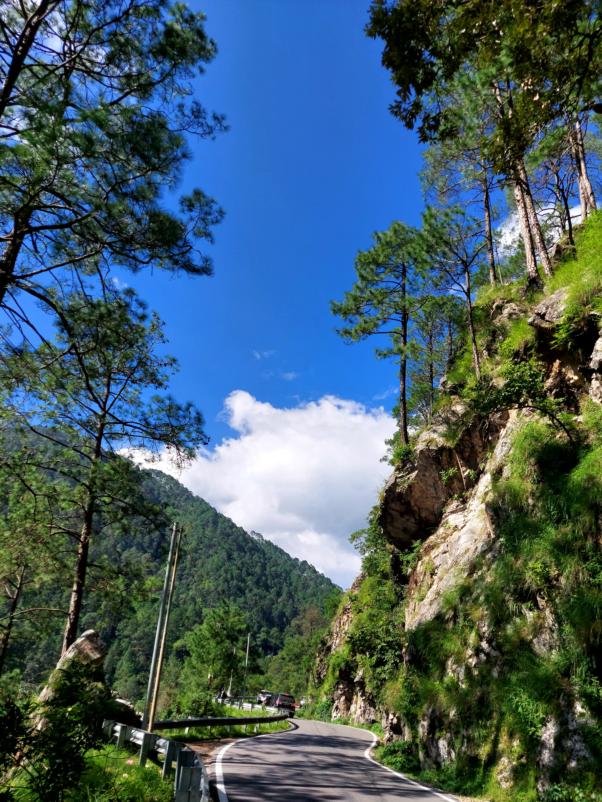

4 Days in Nainital Under ₹5,000 — A Budget Travel Story

This 4-day Nainital budget travel guide covers stay in Bhimtal, local transport, hidden spots like Tiffin Top and Khurpatal, and how we managed everything under ₹5,000.
I wasn't planning to go to Nainital initially. It was my bestfriend's idea, pitched at random sleepover on a Thursday night with the line, "Trains are cheap, let's just go." By Friday morning, we were on the Kathgodam Express from Delhi. That's kind of how Nainital works — it pulls you in before you've had time to overthink it.
The Arrival That Sets the Tone for the Journey

Kathgodam ( the gateway to Kumaon ) is the nearest railway station, about 35 km from Nainital town. Shared jeeps from the station cost around ₹100–120 per person. Don't bother booking a cab in advance — the jeep drivers know the roads better, and you'll save a solid ₹400–500.
We actually based ourselves in Bhimtal, about 22 km from Nainital — and it was the best decision we made. A guesthouse by the lake cost ₹500 a night per person. Nothing fancy — two beds, a window overlooking the water, and a bathroom that was reliably hot in the mornings. Bhimtal gets a fraction of Nainital's crowd, the lake is wider and calmer, and there's a small island in the middle with an aquarium that locals visit on weekends. It felt like the Nainital people used to talk about before everyone started talking about it.
What Nobody Tells You to Do in Nainital
Everyone goes to Naini Lake and Mall Road — and yes, you should too. But skip the overpriced rowboats and instead take in the beauty of the said heaven by taking a walk of the full perimeter of the lake at dawn. It takes about 45 minutes and costs nothing. The water is still, the hills are misty, and you'll have it almost entirely to yourself.
The real hidden gem is Lover's Point (Tiffin Top) via a horse trail from Ayarpatta. Most tourists take horses (₹300–400 return), but the walk up through oak and rhododendron forest takes only 40 minutes and is genuinely beautiful. The viewpoint at the top overlooks the entire Kumaon valley — on a clear day, you can see Nanda Devi. We stayed up there eating Maggi (₹40 a bowl, yes it's worth it even if some say otherwise) for two hours and saw maybe six other people.
Also: Khurpatal, a quieter lake about 12 km out, almost always gets skipped. A shared auto goes for ₹30. The lake is smaller, greener, and surrounded by apple orchards. We sat by the water for an afternoon and felt like we'd found something most tourists hadn't.
Eating in Nainital Without Burning a Hole in Your Pocket
- Sher-e-Punjab – Rajma chawal ₹90
- Machan Restaurant – Thali ₹120
- Bal Mithai – ₹50–80 per 100g
The Honest Part About Visiting Nainital
Nainital in peak season (May–June, October) is crowded and overpriced. Go in late February or early March — it's cold enough for a jacket, quiet enough to hear yourself think, and cheap enough to extend your stay without guilt. That's what we did. And somewhere between the dawn walk around the lake and the Maggi at Tiffin Top, it stopped feeling like a trip and started feeling like something we'd remember. Which, honestly, is the whole point.
Frequently Asked Questions
How many days are enough for a Nainital trip?
A 3 to 4 day trip is usually enough to explore the main attractions of Nainital including Naini Lake, Naina Devi Temple, Snow View Point, Mall Road, and nearby lakes like Bhimtal and Sattal.
What is the minimum budget for a Nainital trip?
A budget trip to Nainital can be done in around ₹4,000–₹6,000 for 3–4 days if you travel by bus or shared taxi, stay in budget hotels, and eat at local restaurants.
What is the best time to visit Nainital?
The best time to visit Nainital is between March and June for pleasant weather and October to December for clear Himalayan views. Winters sometimes bring snowfall which attracts many tourists.
How far is Nainital from Rishikesh?
The distance from Rishikesh to Nainital is approximately 250 km and usually takes around 7–8 hours by road depending on traffic and weather conditions.
Is Nainital good for a budget trip?
Yes, Nainital is a great destination for budget travelers. There are many affordable hotels, shared taxis, and budget food options which make it possible to explore the town without spending too much.